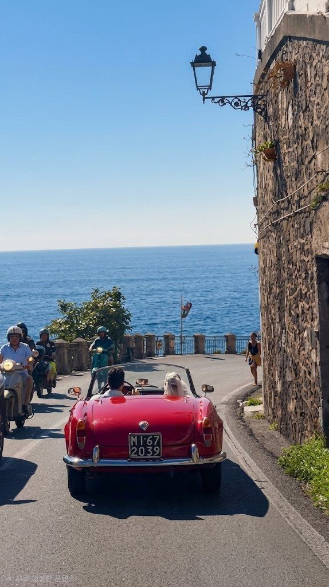

회사에서 돌아와 씻고 나면 하루 중 온전히 내 것인 시간이 몇 시간 남습니다. 그 시간에 무엇을 했는지 돌아보면 기억나는 게 별로 없어서, 이제부터라도 조금씩 적어 보기로 했습니다.
이 블로그에 쓸 이야기
- 여행 — [주말이나 휴가 때 다녀온 곳, 실제로 쓴 비용과 동선]
- 영미문화 — [영어 표현, 영화·드라마 속 장면, 영미권 생활·풍습 이야기]
- 음악 — [요즘 자주 듣는 노래와 그 노래에 얽힌 기억]
- 일상 — [퇴근길에 든 생각, 소소한 일들]
왜 직접 만든 홈페이지에 쓰는지
[이 홈페이지를 직접 만들게 된 계기를 적어 주세요. 예: 자주 쓰는 계산기·날씨·환율을 한 화면에 모아 두고 싶어서 시작했는데, 만들다 보니 글도 함께 남기고 싶어졌다는 이야기 등]

Everything will be fine... — 홈페이지 시계 옆에 적어 둔 문장처럼, 부담 없이 꾸준히 써 보려고 합니다.
[마무리 인사. 예: 앞으로 일주일에 한두 편씩 올릴 예정입니다.]